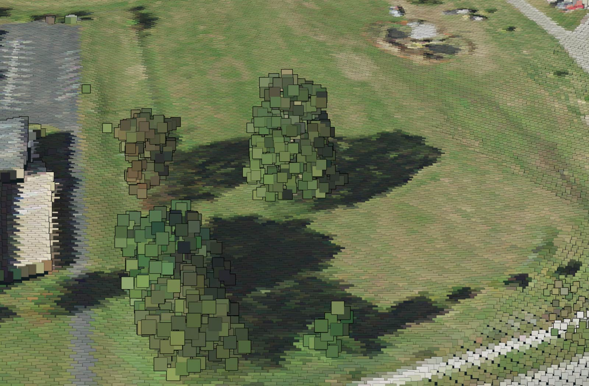
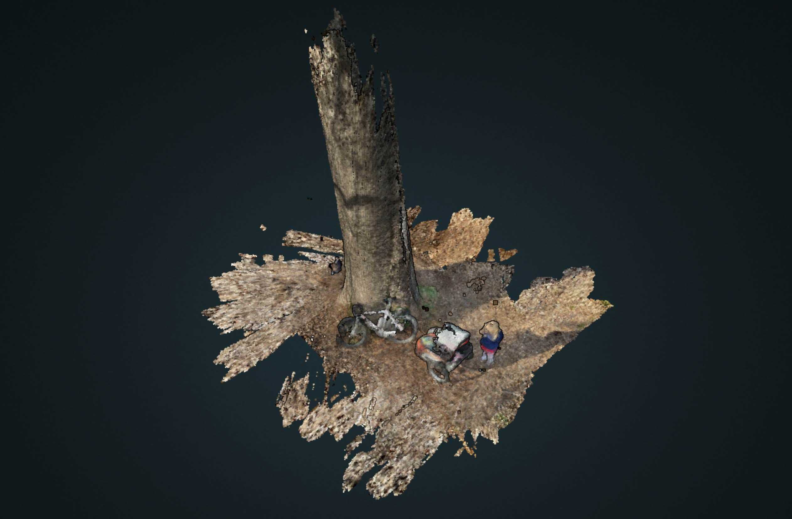

Many fruitful discoveries are made by chance. One afternoon in November during the pandemic, my family decided to explore a neighborhood park. We noticed a tree in the far corner of the park with a string wrapped around its trunk that held a small placard. It read, "Go See Trees," and gave information about the tree–it was a pecan tree. It had a QR code that linked to the Paint by Nature project created by the city of Lexington to support artistic works and help residents recognize that certain tree species do better in different urban conditions.
The project also had a map. It showed twenty-three trees in unique city locations. Many locations are in city parks and all are publicly accessible. A few trees are in greenway corridors and along major drainages in the city, like Wolf Run. I thought the locations would offer an interesting view of our urban ecosystem.
A 360 panorama of the chinkapin oak at Jesse clark Middle School
So, we loaded up the bike trailer with lunch and started our tour of trees. I visited over a dozen that December afternoon and photographed them with a GPS-enabled camera. The GPS coordinates from the images were used to harvest lidar point cloud data from the KyFromAbove project. Twelve trees were selected. A distance of 500 feet from each GPS location was used to create a buffer polygon; the area that contains our point cloud. While the GPS locations were not always exact, each area did capture the highlighted tree.
A series of maps were created to explore these trees. The Cesium ion Story at the top of this page is 'Powerpoint for point clouds' and can estimate tree height and canopy width with its measure tool. The trees were not always the highest or largest tree in the area. They were, instead, well suited to their environmental conditions. A second web technology, Potree, was used to render the point clouds in the browser. Finally, a site map for the Gardenside Park black walnut was created in Mapbox and shows two-foot elevation contours and a shaded relief digital surface model of the point cloud.
Visit Gardenside Park black maple site map. (Map uses only BellTopo Sans typeface.)
These two visualizations show the chinkapin oak tree at Jesse Clark Middle School, one captured from airborne lidar and the other from ground-based lidar. Both visualizations were rendered in the Potree conversion utility.
Airborne lidar point cloud
Ground-based lidar point cloud captured from iPad
University of Kentucky GEO 409, Spring 2021.
UKy GIS and Mapping